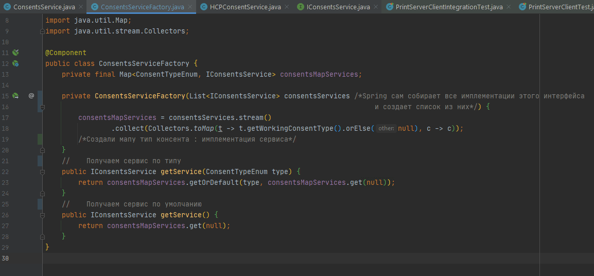
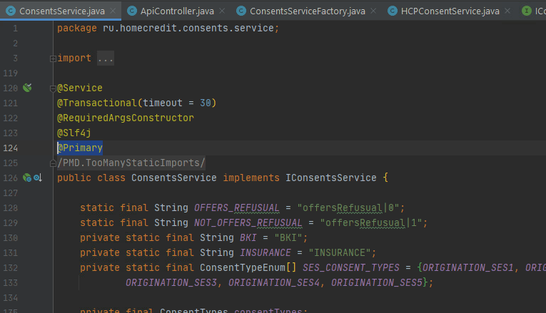
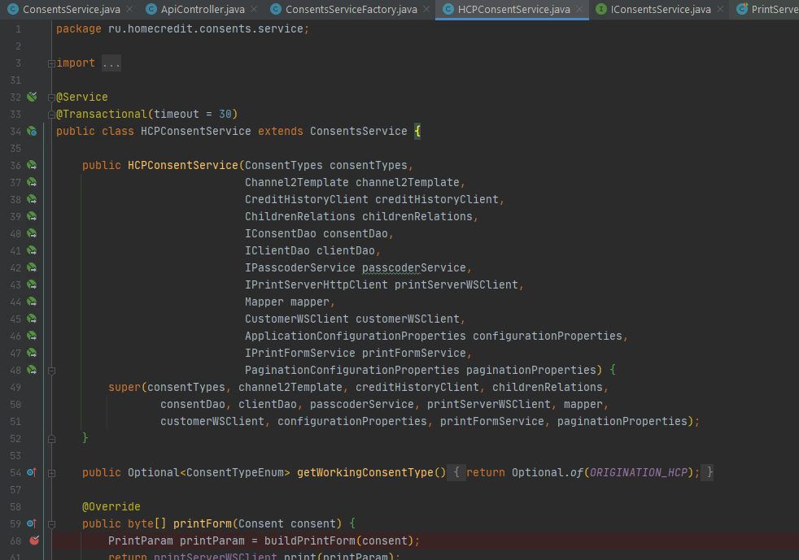
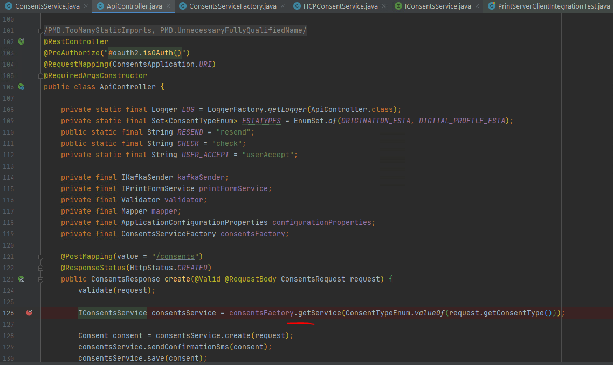

Рефакторинг с помощью паттернов Фабрика и Стратегия
Проблема:
Есть consentService, который работает со всеми типами согласий, и в нем много логики по работе с отдельным типом согласия HСP. Н еобходимо вынести работу с этим типом согласия в тодельный сервис-наследник, и общаться к нему когда у нас согласие типа HCP. Реализовать логику с помощью паттерна стретегия и фабрика.
Решение:
Создаём фабрику, которая нам будет возвращать конкретную имплементацию сервиса, по типу консента. Создаём список имплементаций сервиса, в который спринг будет самостоятельно складывать все имплементации интерфейса сервиса. Далее из списка имплементаций создаём мапу, "тип консента": имплементация сервиса.
Не забыть над основной имплементаций указать @Primary, для того что бы он у нас брался спрингом по дефолту.
Создаём новый сервис и наследуемся от основного, и переносим все методы которые касаются нашего типа согласий.
Меняем в API получение сервиса, мы теперь будет его получать из фабрики.
